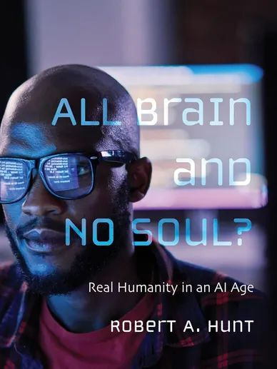

All Brain and No Soul? Real Humanity in an AI Age
How AI and the scientific revolutions before it reshape human identity, and how we can renew our humanity in response.
About
Director of Global Theological Education and Professor of Christian Mission and Interreligious Relations at SMU's Perkins School of Theology, and author of All Brain and No Soul? Real Humanity in an AI Age.
My mission is to promote authentic humanity in changing times, particularly as we enter the AI age. We all have something valuable to offer others and our world if together we embrace our humanity and that of others. We discover our humanity through curiosity about our world and ourselves, critical and appreciative study, open dialogue, and a willingness to learn.
My story
Raised in Texas, I lived and worked for more than 20 years in Malaysia, Singapore, Austria and Eastern Europe. I earned my PhD at the University of Malaya, focusing on Christian-Muslim relations, and I have 45 years of experience teaching about different religions and cultures. I have loved every minute: learning new things and contributing to mutual respect and understanding.
The focus of my professional life as a teacher has been interpretation: helping people understand themselves, their history, and the cultures, religions and social movements that shape their human experience. In an age that is increasingly artificial and two-dimensional, I believe every person, culture and society should be seen in all its fullness and complexity.
The work
Robert Hunt's career bridges theology, history and global education, with a sustained focus on what it means to remain deeply human in a rapidly changing world. His work insists that the humanities are the foundation of leadership in every sphere, from business to politics to science. AI can process information faster than any person, but it cannot model the most essential lesson: how to be a human among other humans.
He holds degrees from The University of Texas at Austin (BA), Southern Methodist University (MDiv) and the University of Malaya (PhD in history), and has taught and led programs across Southeast Asia, Europe and the United States, from developing continuing education in Malaysia and Singapore to directing global theological education at SMU. He edits the American Society of Missiology Monograph Series.
Across all of it, his scholarship asks how communities can orient themselves toward dignity and flourishing: protecting the human space for meaning-making, truth-seeking and community-building, even as AI becomes part of our world of relationships.
Books

How AI and the scientific revolutions before it reshape human identity, and how we can renew our humanity in response.
The key primary documents showing how Christians have translated the gospel into new cultural settings.
An introduction to Islamic belief and practice, written to help Christians understand and love their Muslim neighbors.